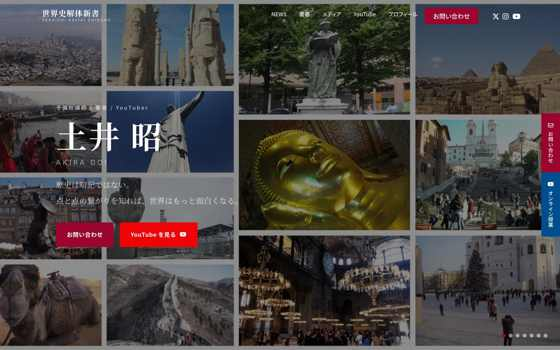

実案件
世界史制服 様
コーディング・WordPress組み込み 2名体制の実装リーダーとして担当
個人で活動するあなたの、Web制作の相談相手。
「何から始めればいい？」も、 聞かせてください。 あなたの 想いや困りごとを、一緒に整理。 デザインから公開後の更新まで、 ひとつの窓口で。
つくりたいことを相談するご希望がまとまっていなくても、大丈夫です。
想いを聞いて、ひとつずつ形に。

WORKS 01 世界史制服 様
コーディング・WordPress
01 / SERVICE
つくって終わりではなく、 使い続けられるサイトへ。 5つのステップでお手伝いします。
つくりたいことを、一緒に整理。
活動のこと、ご希望、お困りごとを伺います。必要なページや作業を整理し、費用とスケジュールをご案内します。
あなたらしい、伝わる見せ方に。
内容の構成からデザインの制作・手配まで。必要な文章や写真をご案内し、見た目と使いやすさを一緒に確かめます。
見やすく、使いやすく、動く形へ。
PC・スマートフォンでの表示を整え、コーディングやWordPressへの組み込みを行います。画面をご確認いただきながら進めます。
確認を重ねて、公開へ。
表示や動作を確認し、契約済みのサーバー・ドメインへの公開に対応します。
つくったあとも、相談できる。
文章・画像の更新、WordPressの保守、ページの修正・追加まで。活動の変化に合わせて、必要なお手伝いをご相談いただけます。
一件ずつ丁寧に対応します。公開後の対応範囲・費用・期間も、ご希望に合わせてお見積もりします。
02 / WORKS 02 / SELECTED WORKS
実案件と自主制作をご紹介します。 それぞれの担当範囲も、併せてご覧ください。
01 / 03
03 / ABOUT
PORTRAIT
顔写真が入ります
TOKYO, JAPAN
東京都を拠点にWeb制作をしています。 大切にしているのは、話を聞いて、 一つひとつ確かめながらつくること。
※ 表示名・顔写真は公開前に差し替え予定
依頼内容がまとまっていなくても大丈夫。ご希望や不安を伺い、決める必要があることを一緒に整理します。
作り始める前に、曖昧な点を洗い出します。担当範囲外でも、気になることがあればお伝えします。
言葉だけでは伝わりにくい動きは、実際に動くサンプルで。見て、確かめていただける説明を心がけています。
04 / FAQ
ご希望の内容、ページ数、デザインや機能の範囲を伺って個別にお見積もりします。作業範囲と費用をご確認いただいてから着手します。ページの追加や当初の範囲を超える変更も、事前に費用をご案内します。
はい。文章・画像の更新、WordPressの保守、ページの修正・追加などをご相談いただけます。対応範囲・費用・期間は、ご希望に合わせてお見積もりします。
まずは活動のことや、つくりたいもの、お困りのことをお聞かせください。必要な文章や写真は、お話を伺いながらご案内します。
はい。ご希望がまとまっていなくても大丈夫です。必要なページや作業を一緒に整理し、費用とスケジュールをご案内します。
必要な作業を伺ったうえで、対応できる範囲をご案内します。まずはご希望の内容をお聞かせください。
LET’S TALK
まだまとまっていなくても大丈夫。 小さな疑問から、お気軽にどうぞ。
内容を伺って、個別にお見積もりします。 作業範囲と費用を確認してから、制作を始めます。